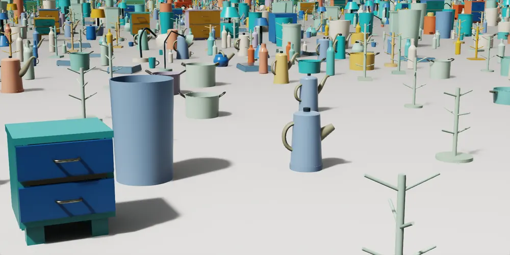
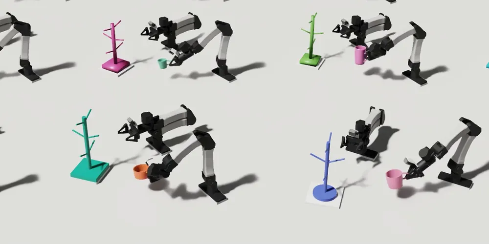

Author a generator.
Agents write and validate category-level procedural code, then sample geometry and appearance variations.
Agentic assets + demonstration generation
Generate diverse worlds.
Train robots for unseen geometries.
SimScale is an agentic simulation data pipeline. It turns an object description and one human demonstration into diverse asset families and thousands of successful robot trajectories—so policies can handle new shapes, sizes, and poses.
Start here / Overview
Collecting a new demonstration for every object geometry is expensive. SimScale separates the reasoning needed to build reusable tools from the computation needed to generate training data at scale.
Agents write and validate category-level procedural code, then sample geometry and appearance variations.
Agents decompose one human demonstration and adapt executable task programs across object geometries.
DexMimicGen expands accepted source trajectories across poses. Imitation learning trains policies for held-out objects.
The scaling principle / Agentic authoring, procedural execution
Agents create and revise reusable programs. Procedural sampling and trajectory transformation provide throughput, while simulation checks determine which outputs enter training.
Search real examples → author a parameterized generator → review category coverage and geometry.
Sample valid parameters and compile many assets from the accepted generator, without a new agent conversation for each sample.
Decompose the human demo → write a task program → adapt geometry-dependent targets with simulation feedback.
DexMimicGen transforms accepted source trajectories across poses. Re-execute and retain successful demonstrations.
Flexibility comes from agent-authored code and geometry-specific adaptation. Scale comes from reusing those outputs. Agent work remains necessary for new generators and asset-specific task adaptation; pose expansion reuses the accepted sources.
See the complete method and validation stages ↓01 / Real-world results
Policies trained only in simulation are tested on physical objects without object-specific fine-tuning.
02 / Asset generation
Each task includes multiple object instances with different shapes, sizes, and appearances.
Hands-on / Asset playground
Choose a family and move the sliders to generate a 3D mesh instantly in your browser. Drag the object to orbit, sample a new variant, or download the mesh.
Drag or use arrow keys to orbit · geometry updates live
This lightweight playground illustrates procedural geometry controls. It runs a browser demo generator; the research pipeline additionally validates simulation-ready assets, metadata, and robot task execution.
03 / Demonstration generation
DemoEngine adapts agent-authored task programs across geometries. DexMimicGen then expands accepted source trajectories across object poses and retains successful executions.
04 / Simulation evaluation
Compare task-completion success on held-out asset geometries. Each training condition uses 4,000 generated demonstrations per task; demonstration generation is held fixed to isolate the asset source.
30 SimScale configurations per task, a held-out 20% of RoboCasa assets, and five real-object digital-twin pairs.
GR00T N1.6 and DINOv3 + FMT are evaluated across generated families, curated assets, and digital twins.
Success requires completing the manipulation task. Scores below are percentages with reported standard errors.
| Training asset source | Put pot | Hang mug | Put charger |
|---|
Source: manuscript simulation results table. RoboCasa has no charger assets; unavailable comparisons are shown explicitly.
05 / Baseline comparison
SimScale combines category-level procedural assets with geometry-aware task adaptation. The simulation table above compares training asset sources; the selected real-world rollouts below show matched task objects.
Articraft uses agents to author individual articulated assets. SimScale uses its SDK to author reusable category-level generators, then samples controlled variation and connects it to robot data generation.
Articraft paper ↗Curated asset libraries and real-to-sim twins or cousins provide alternative training geometries. SimScale learns from a sampled category distribution; our simulation study compares these sources with the same demonstration budget.
View the measured comparison ↑DexMimicGen efficiently expands source demonstrations across poses. SimScale adds agent-authored task programs and geometry-specific source adaptation, then uses DexMimicGen for pose expansion.
DexMimicGen project ↗MolmoBot scales task-and-motion-planning data for pick-and-place and articulated-object tasks. SimScale studies geometry-aware source generation for bimanual pot placement, mug hanging, and charger placement. These are different task suites, with no head-to-head score reported here.
MolmoBot paper ↗The comparisons describe method scope. Quantitative evidence above comes from the matched SimScale asset-source study; it does not measure token cost or throughput against MolmoBot or DexMimicGen.
Selected real-world rollouts · 8× playback · illustrative videos, not aggregate success rates
06 / Method
SimScale turns a short asset description and one human demonstration collected in simulation into a training set that spans object geometry and pose.
“Mugs with handles and branched racks”
An author agent encodes dimensions, part variants, dependencies, and articulation. A coverage critic and geometry validator guide revisions. Accepted code is reused for procedural sampling.

A single human trajectory collected in simulation.
# Illustrative pseudocode
program = author_task(source_demo)
for asset in asset_family:
task = agent_adapt(program, asset)
rollout = task.execute()
if rollout.success:
dataset += dexmimicgen(rollout, poses)Agents reuse the task decomposition while adapting targets and logic to new geometry. DexMimicGen expands successful source runs across poses; task checks filter the resulting executions.

AssetEngine
AssetEngine writes one parameterized procedural generator whose controls describe meaningful variation across an object category.
OutputDiverse, physically plausible simulation assets
DemoEngine
DemoEngine turns the reference trajectory into a reusable task program, then uses simulation feedback and robot tools to make it work across the asset family.
OutputDiverse, successful demonstrations across assets and poses
Project summary
Diverse assets. Generated demonstrations. One policy tested on objects it has not seen before.